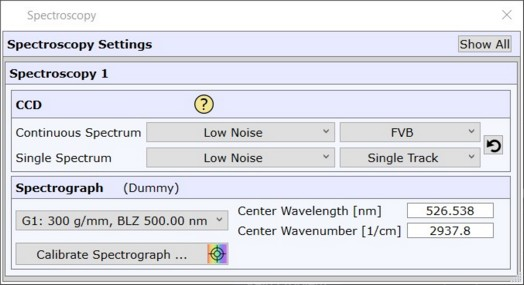

|
光谱设置
|
更多信息：

显示全部
单击以显示所有光谱系统，否则仅显示当前选中的光谱。
在此可更改 CCD 传感器读出模式（左侧组合框）和合并模式（右侧组合框）。
连续光谱
此设置适用于连续光谱采集，用于示波器、快速时间序列、图像扫描和大面积扫描的连续模式。
对于较长的积分时间 > 400 ms，可以使用单轨作为合并设置，以减少宇宙射线事件的数量和暗电流量，但会导致信号略低。对于积分时间 > 1 s，推荐使用单轨设置。
单光谱
此设置适用于例如单光谱、线扫描和大面积扫描的步进栅格模式。对于这些模式，速度不太重要，几乎所有情况下都使用默认设置。
模式
该模式定义相机的读出速度和动态范围。
低噪声
此设置针对低噪声进行了优化，但可能在极短的积分时间内限制读出速度。
高动态范围
此设置提供更大的动态范围，用于测量更高强度而不会使相机饱和。
高动态范围（快速）
此设置提供更大的动态范围和更高的读出速度。
电子倍增
此设置仅适用于 EMCCD。对于此设置，需要无背景的低信号。然后低信号被放大到高于读出噪声。对于较长的积分时间，热噪声变得比读出噪声更重要，放大的优势将丧失。
合并
合并定义 CCD 芯片的读出方式。
裁剪（超快速）
仅读取 CCD 区域的一小部分，但 CCD 的其余部分不进行清洁。这是最快的模式，减少了时钟诱导电荷。
单轨
仅使用 CCD 的几行作为光谱，其余部分被丢弃。此模式收集的宇宙射线事件最少，暗电流也较少。较慢的读出可能导致短积分时间内信号强度较低。
FVB
对于全垂直合并（FVB），整个 CCD 芯片被合并到一条线。此模式比单轨快，但收集更多的宇宙射线事件和更多的暗电流。
无
仅适用于线阵相机。无法进行合并。
使用默认值
设置所有测量模式的默认设置。
光栅
光栅参数允许选择用于光谱测量的光栅。下拉菜单中列出的光栅取决于具体配置，但通常具有形式 [光栅编号: 刻线密度, 闪耀波长]。
中心波长 [nm]
可以使用此参数调整照射到 CCD 芯片中心的波长。此波长也将是软件中显示的光谱的中心波长。要更改中心波长，软件计算所选光栅所需的旋转角度。
光谱波数 [1/cm]
光谱中心与中心波长相同。唯一的区别是单位是相对于激光波长的波数。
校准光谱仪
打开 光谱仪校准。
请注意，自动显微镜系统将自动耦合校准所需的设备，例如自动校准灯、输出等。